条件概率、全概率和贝叶斯
Conditional Probability,,
事件 B 发生后事件 A 发生的概率：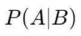
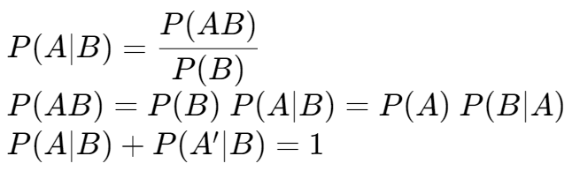
当事件 A, B 互相独立时，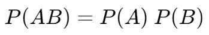
Total Probability,,
设样本空间 S，其中的若干事件 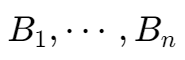 互斥，且 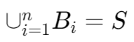
则事件 为 S 的 partition。
对于 S 中的任意事件 A，有 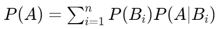
Bayes' Theorem,,
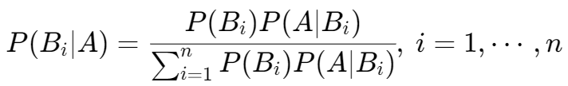
由上可推出：
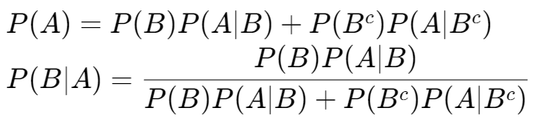

事件 B 发生后事件 A 发生的概率：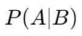
当事件 A, B 互相独立时，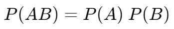
设样本空间 S，其中的若干事件 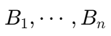 互斥，且 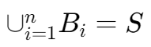
则事件 为 S 的 partition。
对于 S 中的任意事件 A，有 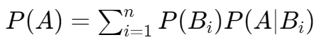
由上可推出：